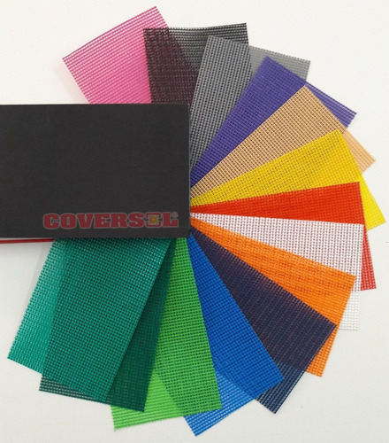
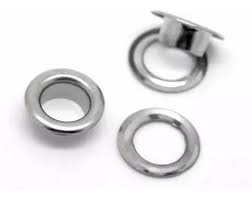
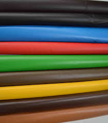
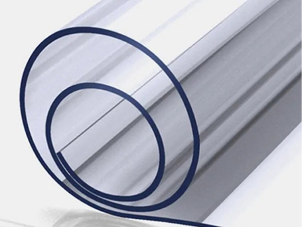
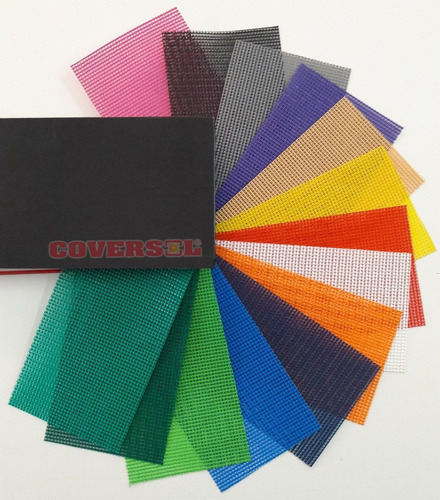
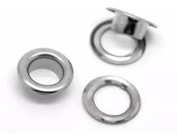
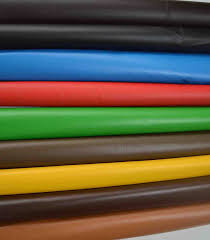
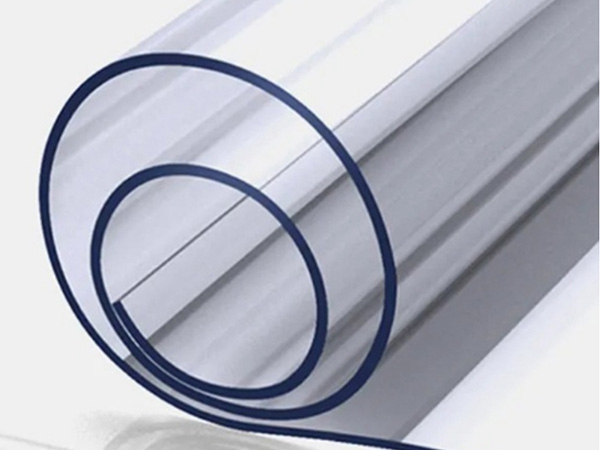

Lonas De PVC
Ojales Metalicos
Cuerinas
Ojales Bronce
Lona PVC Transparente
telas
| Materiales | Descripcion |
|---|---|
| PVC Transparente | El Cristal es una película de PVC transparente y flexible. Esta tela plástica se puede procesar por sellado de alta frecuencia y costura. Es brilloso y suave al tacto. Algunas de sus ventajas son que es un material liso, fácil de colocar y limpiar. Impermeable flexible y no necesita mantenimiento. |
| Lona PVC | La característica más importante del PVC es su impermeabilidad lo que es ideal para sistemas de protección solar expuestos a ambientes húmedos. También son altamente resistentes a los hongos, excelente soldabilidad y son fácilmente imprimibles. |
| Coversol | La línea de telas coversol ha sido creada para una gran diversidad de utilidades que a su vez le permitirán innovar en el diseño de nuevos productos. Ademas ofrece un calado pequeño, obteniendo así tejidos frescos, dúctiles, atractivos a la vista y resistentes a la intemperie. |
| Cuerina | La cuerina también llamada cuero ecológico, o ecocuer es una tela plástica compuesta por un tejido jersey de algodón, cubierto por una lámina de PVC en una de sus caras. Es utilizada para todo tipo de tapizados, como así también para marroquinería y otros usos. |
| Rafialon | El Radialon demuestra su rendimiento, adaptándose a los más variados usos como cerramientos y divisiones industriales, como cobertor de máquinas, equipos, vehículos, materia prima, tambores, cajones, estibas temporarias, embalajes interiores de productos |
| Polietileno | La lona de polietileno es una lámina de material fuerte, flexible, resistente al agua o impermeable. |